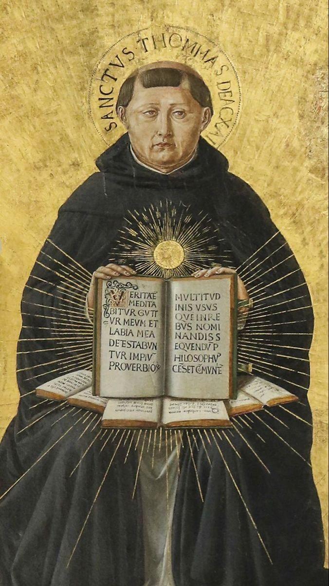
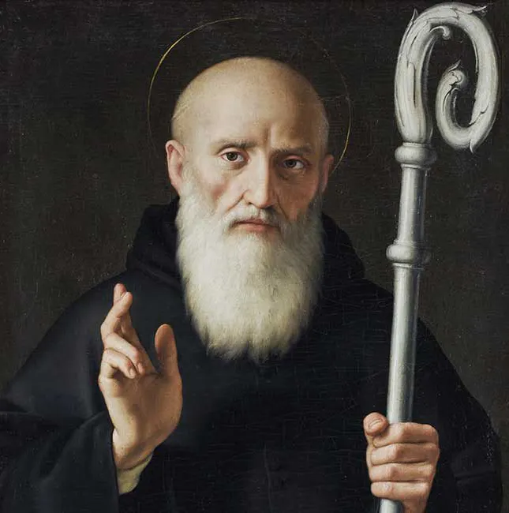
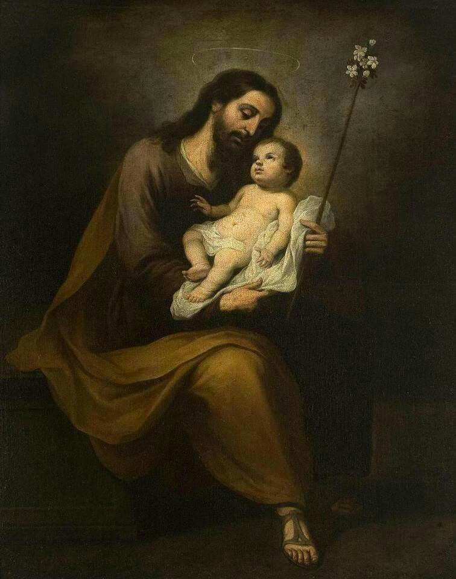
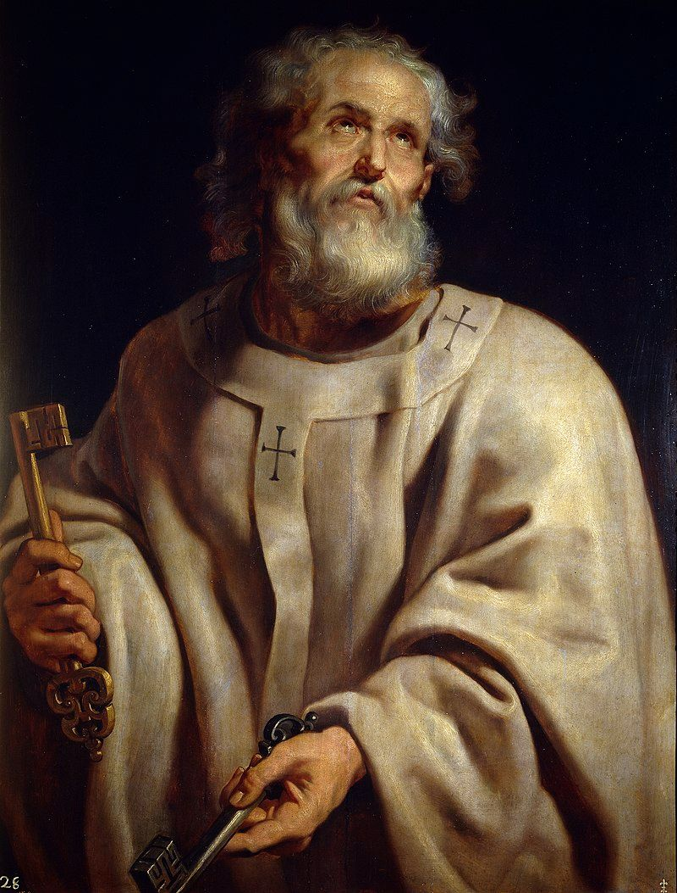

Semana a semana
Nossos Intercessores
A cada semana nos aproximamos de um servo de Deus que viveu radicalmente o Evangelho. Que o seu exemplo de fé, esperança e caridade nos inspire, e as suas orações nos acompanhem ao longo desta jornada de Iniciação Cristã.

Festa: 28 de Janeiro
Santo Tomás de Aquino
Doutor Angélico · Patrono dos Estudantes e Teólogos
Nascido em 1225 no castelo de Roccasecca, na Itália, Tomás pertencia a uma família nobre. Contra a vontade dos familiares, entrou jovem na Ordem dos Pregadores — os Dominicanos — seguindo o chamado de Deus com coragem e determinação.
Discípulo de São Alberto Magno em Colônia e Paris, tornou-se o maior teólogo da história da Igreja. Sua obra monumental, a Summa Theologiae, harmoniza fé e razão de modo que ainda hoje orienta a reflexão católica, pois acreditava que toda verdade, onde quer que se encontre, pertence ao Espírito Santo.
Era um homem de oração profunda. Conta-se que, orando diante do crucifixo, Cristo lhe disse: "Escreveste bem sobre Mim, Tomás. Que recompensa desejas?" E ele respondeu: "Nenhuma outra senão a Ti mesmo, Senhor." Morreu em 1274 e foi canonizado em 1323. É Doutor da Igreja.
"A fé tem por objeto a verdade primeira; a inteligência é o seu instrumento, e o amor, a sua razão de ser."
— Santo Tomás de Aquino, Summa Theologiae

Festa: 11 de Julho
São Bento de Núrsia
Pai do Monaquismo Ocidental
Nascido por volta de 480 em Núrsia, na Itália, Bento deixou ainda jovem os estudos em Roma, desejando buscar acima de tudo a Deus. Segundo São Gregório Magno, ao ver a corrupção dos costumes, retirou-se para a solidão de Subiaco, onde, no silêncio, na penitência e na oração, amadureceu na vida espiritual.
Mais tarde, fundou mosteiros e estabeleceu-se em Monte Cassino, onde compôs a sua célebre Regra, marcada pela sabedoria, equilíbrio e centralidade da busca de Deus. Por essa obra, tornou-se o grande pai do monaquismo ocidental, ensinando uma vida de oração, obediência, humildade e trabalho ordenado para a glória de Deus.
São Gregório Magno apresenta Bento como um verdadeiro homem de Deus, cuja vida estava profundamente imersa na oração e cujo ensinamento brotava da própria santidade. Morreu por volta de 547, de pé em oração, e a Igreja o venera como patriarca dos monges do Ocidente e Padroeiro da Europa.
"O homem de Deus que brilhou nesta terra com tantos milagres não resplandeceu menos pela eloquência com que soube expor a sua doutrina."
— São Gregório Magno, Diálogos, livro II

Festa: 19 de Março
São José
Esposo da Virgem Maria · Patrono da Igreja Universal
Descendente da casa de Davi, São José foi escolhido por Deus para ser o esposo castíssimo da Virgem Maria e o pai adotivo de Nosso Senhor Jesus Cristo. Homem justo, conforme atesta o Evangelho (cf. Mt 1,19), viveu na fidelidade silenciosa à vontade divina, acolhendo com fé o mistério da Encarnação.
Carpinteiro em Nazaré, exerceu com dignidade o trabalho manual, sustentando a Sagrada Família e educando o Menino Jesus. Nos momentos decisivos — como na fuga para o Egito — mostrou pronta obediência às inspirações divinas, sendo modelo perfeito de confiança na Providência.
A Tradição da Igreja sempre venerou São José como guardião do Redentor e protetor da Igreja. Foi proclamado Patrono da Igreja Universal em 1870 pelo Papa Pio IX. Seu silêncio nas Escrituras revela uma vida totalmente entregue a Deus, marcada pela humildade, pureza e fidelidade até o fim.
"Ide a José."
— Gn 41,55 (aplicado tradicionalmente a São José)

Festa: 29 de Junho
São Pedro
Príncipe dos Apóstolos · Primeiro Papa
Nascido com o nome de Simão, pescador da Galileia, foi chamado por Cristo para segui-Lo e tornou-se um dos seus discípulos mais próximos. O Senhor lhe deu um novo nome: Pedro (Kephas, “rocha”), dizendo: “Tu és Pedro, e sobre esta pedra edificarei a minha Igreja” (Mt 16,18), confiando-lhe também as chaves do Reino dos Céus.
Apesar de sua fraqueza — como na tríplice negação durante a Paixão —, Pedro foi confirmado no amor por Cristo ressuscitado: “Apascenta as minhas ovelhas” (Jo 21,17). Tornou-se assim o pastor visível da Igreja nascente, pregando com coragem, especialmente no dia de Pentecostes (cf. At 2).
Segundo a Tradição e narrado na Legenda Áurea, ao enfrentar o martírio em Roma, pediu para ser crucificado de cabeça para baixo, por não se julgar digno de morrer como seu Senhor. Seu testemunho confirma sua fidelidade até o fim, sendo reconhecido como o Príncipe dos Apóstolos e fundamento visível da unidade da Igreja.
"Senhor, Tu sabes tudo; Tu sabes que eu Te amo."
— Jo 21,17

Festa: 29 de Junho
São Paulo
Apóstolo dos Gentios · Doutor das Nações
Nascido em Tarso, da Cilícia, judeu fariseu de nome Saulo e cidadão romano, foi a princípio perseguidor da Igreja, consentindo na morte de Santo Estêvão. A caminho de Damasco, o próprio Cristo ressuscitado lhe saiu ao encontro — “Saulo, Saulo, por que me persegues?” — e aquela luz o derrubou e o converteu para sempre.
Tornou-se o maior missionário da Igreja primitiva. Em grandes viagens percorreu o mundo greco-romano anunciando Cristo aos gentios, fundando comunidades e escrevendo as Cartas que são parte fundamental do Novo Testamento, nas quais expôs com profundidade o mistério da graça, da fé e da caridade.
Preso por causa do Evangelho, foi levado a Roma, onde, segundo a Tradição, sofreu o martírio por decapitação sob Nero, por volta do ano 67. A Igreja o venera, junto com São Pedro, como coluna e fundamento, e celebra ambos no mesmo dia.
Combati o bom combate, terminei a corrida, guardei a fé.
— 2 Tm 4,7
Festa: 30 de Novembro
Santo André
O Primeiro Chamado · Apóstolo
Pescador da Galileia e irmão de Simão Pedro, André era primeiro discípulo de João Batista. Ao ouvir o Mestre apontar Jesus como o “Cordeiro de Deus”, seguiu-O e, sendo o primeiro a reconhecê-Lo, correu a buscar o irmão: “Encontramos o Messias” (Jo 1,41). Por isso a tradição o chama de “o Primeiro Chamado” (Protocletos).
Está presente em momentos-chave do Evangelho, como na multiplicação dos pães, quando apresenta a Jesus o menino com os cinco pães e dois peixes. Após Pentecostes, anunciou o Evangelho pela Grécia e pelas regiões do Mar Negro.
Segundo a Tradição, foi martirizado em Patras, crucificado numa cruz em forma de X — a “cruz de Santo André” —, na qual teria pregado por dois dias antes de morrer, louvando a Deus. É padroeiro da Escócia, da Rússia e da Grécia.
Salve, ó Cruz, recebe o discípulo daquele que de ti pendeu, meu Mestre, Cristo.
— atribuída a Santo André

Festa: 3 de Maio (com São Filipe)
São Tiago Menor
Apóstolo · Tiago, filho de Alfeu
Conta-se entre os Doze Apóstolos como “Tiago, filho de Alfeu”, chamado “Menor” para o distinguir de Tiago, filho de Zebedeu. A Tradição o associa de perto à primeira comunidade cristã de Jerusalém, da qual teria sido pastor e firme referência de fé.
É tradicionalmente identificado com o autor da Carta de Tiago, escrito sapiencial que une fé e obras: “a fé sem obras é morta” (Tg 2,26). Sua palavra exorta à coerência cristã, à paciência na provação e ao cuidado com os pobres.
Homem de oração e justiça, deu testemunho de Cristo até o martírio em Jerusalém. A Igreja o celebra junto com o apóstolo São Filipe.
Sede praticantes da Palavra e não apenas ouvintes.
— Tg 1,22

Festa: 1 de Outubro
Santa Teresinha do Menino Jesus
Doutora da Igreja · A Pequena Via
Nascida em Alençon, França, em 1873, Teresa Martin entrou ainda muito jovem no Carmelo de Lisieux, desejando ser “o amor no coração da Igreja”. Em poucos anos de vida escondida, viveu com heroísmo o caminho da infância espiritual.
Ensinou a “pequena via”: tornar-se pequeno e confiar-se totalmente, como uma criança, ao amor misericordioso de Deus, fazendo das coisas mais simples atos de amor. Sua autobiografia, História de uma Alma, tocou o mundo inteiro.
Morreu de tuberculose aos 24 anos, em 1897, prometendo “passar o céu fazendo o bem na terra” e fazer “cair uma chuva de rosas”. Foi canonizada em 1925 e proclamada Doutora da Igreja e padroeira das missões.
No coração da Igreja, minha Mãe, eu serei o amor.
— Santa Teresinha, Manuscritos Autobiográficos

Festa: 26 de Junho
São Josemaría Escrivá
Fundador do Opus Dei · Santo do Cotidiano
Nascido em Barbastro, Espanha, em 1902, foi ordenado sacerdote em 1925. Em 1928, por inspiração divina, fundou o Opus Dei, para difundir na Igreja a chamada universal à santidade — a verdade de que todos os batizados são chamados a ser santos em meio às ocupações comuns.
Pregou incansavelmente que o trabalho profissional, a vida familiar e as circunstâncias ordinárias do dia são caminho de encontro com Deus, quando vividos com amor e oferecidos a Ele: “santificar o trabalho, santificar-se no trabalho, santificar os outros pelo trabalho”.
Faleceu em Roma em 1975. Foi canonizado por São João Paulo II em 2002, que o apresentou como “o santo do ordinário”.
Tens obrigação de te santificar. Tu também. Quem pensa que isto é coisa só de sacerdotes e religiosos?
— São Josemaría, Caminho

Festa: 28 de Agosto
Santo Agostinho
Doutor da Graça · Bispo de Hipona
Nascido em Tagaste, no norte da África, em 354, foi mestre de retórica e viveu a juventude longe de Deus, buscando a verdade em filosofias e seitas. As lágrimas e orações de sua mãe, Santa Mônica, e a pregação de Santo Ambrósio em Milão prepararam sua conversão.
Tocado pela graça ao ouvir “toma e lê”, abriu a Escritura e entregou-se a Cristo, sendo batizado em 387. Tornou-se bispo de Hipona e o maior dos Padres da Igreja latina, autor das Confissões e da Cidade de Deus.
Defensor da fé contra os erros do seu tempo, ensinou com profundidade a graça, a Trindade e a Igreja. Morreu em 430. É Doutor da Igreja.
Tarde te amei, ó Beleza tão antiga e tão nova, tarde te amei!
— Santo Agostinho, Confissões
Festa: 11 de Abril
Santa Gemma Galgani
A Virgem de Lucca · Mística dos Estigmas
Nascida perto de Lucca, na Itália, em 1878, Gemma cedo perdeu os pais e conheceu a pobreza e a doença. Desde menina nutriu intenso amor à Paixão de Cristo e à Eucaristia, vivendo uma vida de oração e penitência.
Favorecida por dons místicos extraordinários — entre eles os estigmas, as marcas da Paixão do Senhor —, ofereceu seus muitos sofrimentos em união com Cristo crucificado, pela conversão dos pecadores, com humildade e abandono.
Morreu aos 25 anos, em 1903, na véspera de um Sábado Santo. Foi canonizada em 1940 e é especialmente venerada pelos Passionistas, invocada como modelo de amor à Cruz.
Jesus, fazei que eu vos ame, e depois fazei de mim o que quiserdes.
— Santa Gemma Galgani
Festa: 22 de Outubro
São João Paulo II
O Papa Peregrino · Karol Wojtyła
Nascido em Wadowice, Polônia, em 1920, Karol Wojtyła viveu a juventude sob a ocupação nazista e, depois, o regime comunista. Ordenado sacerdote e mais tarde arcebispo de Cracóvia, participou do Concílio Vaticano II.
Eleito Papa em 1978 — o primeiro não italiano em séculos —, governou a Igreja por 27 anos sob o lema “Não tenhais medo!”. Peregrino incansável, percorreu o mundo, defendeu a dignidade humana, teve papel decisivo na queda do comunismo e fundou as Jornadas Mundiais da Juventude.
Marcado pelo sofrimento oferecido com fé até o fim, morreu em 2005. Foi canonizado em 2014.
Não tenhais medo! Abri, abri de par em par as portas a Cristo!
— São João Paulo II, 1978

Festa: 12 de Outubro
São Carlo Acutis
O Padroeiro da Internet · Santo Millennial
Nascido em Londres em 1991 e criado em Milão, Carlo foi um adolescente comum — gostava de jogos, computadores e futebol —, mas dotado de uma fé extraordinária. Tinha na Eucaristia a sua “estrada para o Céu” e participava diariamente da Santa Missa.
Talentoso em informática, usou seus conhecimentos para Deus: criou um site catalogando os milagres eucarísticos do mundo, evangelizando pela internet. Cuidava dos pobres e dos colegas com alegria e simplicidade.
Morreu de leucemia em 2006, aos 15 anos, oferecendo seus sofrimentos pela Igreja e pelo Papa. Foi canonizado em 2025, tornando-se um dos primeiros santos da geração millennial.
A Eucaristia é a minha estrada para o Céu.
— São Carlo Acutis